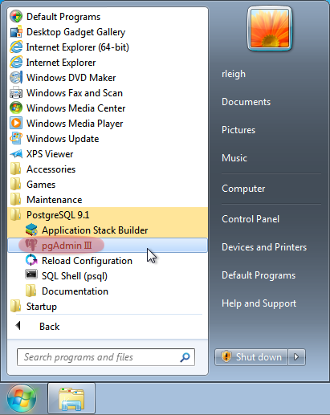
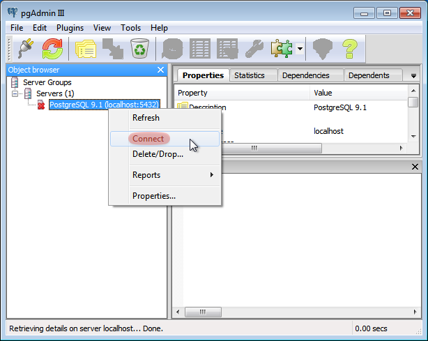
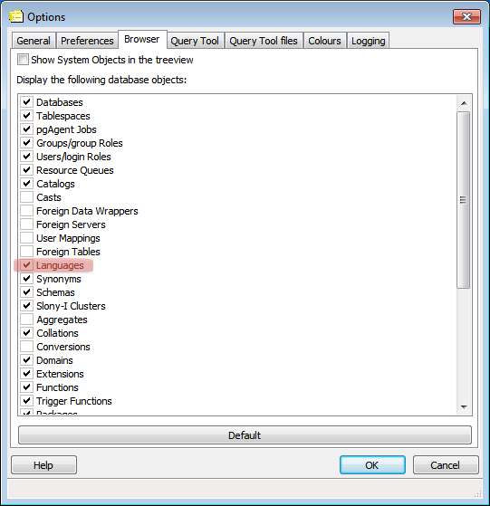
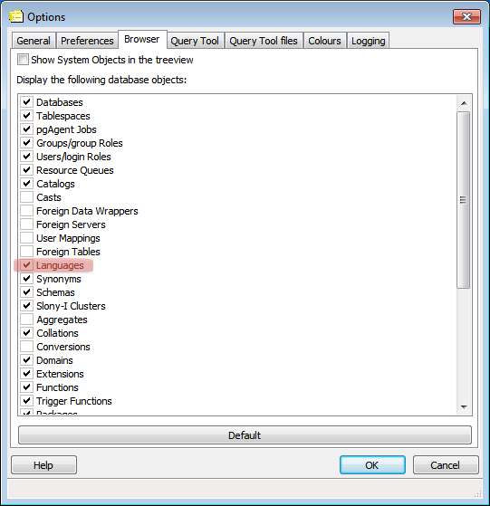

OMERO.server Installation for Microsoft Windows
- If you are upgrading your OMERO.server installation you should follow instructions on the upgrade page.
- If you are attempting a UNIX Based Platform install (Linux, Mac OS X, etc.) please see the UNIX Based Platform install page.
Limitations

- Installation will require an "administrator" level account for which you know the password. If you are unsure of what it means to have a "administrator" level account, or if you are generally having issues with the various users/passwords described in this install guide, please see "Which password do I use where?" under "Troubleshooting". Unless you are clear on the differences, you should also open all consoles as an administrator to prevent file permission issues. (See screenshot)
- Installation on Windows XP is not explicitly supported, especially for OMERO.web. Significant testing has taken place on Windows Server 2008 and we recommend this version.
- OMERO.movie does not work on Windows at present.
-
Spaces are not currently supported in installation path names. Note: default user paths on Windows usually contain spaces so you will need to ensure the path has no spaces,
C:\omero_distfor example. - A reboot is required after installing the prerequisites.
Prerequisites
The following are necessary:
PostgreSQL 8.4 or higher (9.1 recommended) installed and configured with PL/pgSQL and to accept TCP connections.
PostgreSQL 8.3 and earlier releases are not supported. See Known Limitations. We suggest using 9.1, and it is assumed throughout these instructions. See OMERO and PostreSQL for specifics about each version. The Windows One click installer can be found on the PostgreSQL Windows download page. You will need the postgres user's password later in the install.
- You must install PostgreSQL as a service if you want to follow this document; other PostgreSQL installation environments are supported but are outside the scope of this document.
Java 1.5 SE Development Kit (JDK) or higher installed http://java.sun.com/javase/downloads/index.jsp
Be sure to download the JDK SE version (nor "JRE" nor "EE" versions).
Ice 3.4.x installed
Windows installers can be found on the ZeroC download page and will be called something like
Ice-3.4.2.msi(for Ice 3.4.2). If you plan to develop for C++, be sure to read the instructions on the OmeroCpp trac page.Python 2.6.x installed
Ice 3.4.x requires Python 2.6.x. You must download the 32-bit version from python.org. As this is the "vanilla" python distribution (no extra libraries), you will need to install further dependencies, making sure to download the correct bitness and Python version:
Python for Windows extensions
The installer is available from here.
Python Imaging Library (only for OMERO.web and Figure creation functionality in Insight)
Packages should be available for 32-bit Python 2.6 from here.
Matplot Lib (for OMERO.web only)
Packages should be available for 32-bit Python 2.6 distribution from here.
Numpy Lib version 1.2.0 or later (for scripting services)
NumPy is available at the main NumPy website here. It is highly recommended you use numpy 1.4.0 or later.
PyTables Lib version 2.1 or later (for OMERO.tables)
PyTables is available from here.
scipy.ndimage allows larger volumes to be viewed in the Volume Viewer.
See scipy.
Finally, you need the OMERO server:
- OMERO.server ZIP available from the OMERO downloads page.
Environment variables
For the prerequisite software to run properly, both your PATH and PYTHONPATH system environment variables must be configured.
Update your Windows environment variables: (REQUIRES RESTART!)
Locate the System control panel page on the Start Menu under Settings → Control Panel, open it and navigate to the Advanced tab (on Windows Vista the dialog will be visible after clicking the Change settings link on the System control panel page):

Open the Environment Variables dialog by clicking on the Environment Variables... button of the above dialog:

Edit the existing System environment variable
Pathand add a new variable pointing to the Ice installation 'bin' directory. At the front of thePathvariable also add a new string pointing to the Python installation directory (e.g.C:\Python26). Then add a brand new System environment variable calledPYTHONPATHpointing to the Ice installation 'python' location:


Restart your computer. For environment changes to take effect in background services, a restart is unfortunately necessary. See http://support.microsoft.com/kb/821761 for more information.
When performing some operations the clients make use of temporary file storage and log directories. By default these files are stored below the users HOME directory in $HOME\omero\tmp, $HOME\omero\log and $HOME\omero\sessions. If your home(~) directory $HOME is stored on a network, possibly NFS mounted (or similar), then these temporary files are being written and read over the network. This can slow access down.
The OMERO.server also access the $HOME\omero/tmp and $HOME\omero/log folders of the user the server process is running as. As the server makes heavier use of these folders than the clients, if the users home(~) is stored on a network the server can be slowed down. To get round this for the OMERO.server you can define an OMERO_TEMPDIR environment variable pointing to a temporary directory located on the local file system (e.g. C:\tmp\).
Installing PostgreSQL
Run the downloaded installer:

You may be prompted for permission to continue with a "user account control" dialog. Click "yes" to continue.

The installer will now start.

Choose the installation directory. The default is fine.

Choose the data directory. The default is fine, but if you want to keep the data in a specific location, you may choose an alternative location here.

Enter a password for the special "postgres" system account. OMERO does not use this account, but you will need to remember the password for creating the database, below.

Enter the port number for PostgreSQL to listen on for incoming connections. The default, 5432, is fine and should not be changed.

Select the locale. The default here is fine.

PostgreSQL will now be installed and started.


Creating a database
Create a non-superuser database user (make sure to note down the name and password) using pgAdmin III. You can find pgAdmin III on the Start Menu under Programs → PostgreSQL 9.1 → pgAdmin III:
Double-click on the PostgreSQL 9.1 database (or right-click and choose Connect) and provide your postgres user login password set during the installation, above.
 

Right-click on Login Roles and select New Login Role...

Create a new role with the Role name
db_userand a Passworddb_password. Note that these are examples, and you should use your own choice of username and password here. You will need to configure OMERO to use your username and password by setting the omero.db.name and omero.db.pass properties (below).

Create an
omero_databasedatabase:Right-click on Databases and select New Database...

Create a new database with the Name
omero_databaseand Ownerdb_user(this may take a few moments)
Confirm PL/pgSQL language support in your newly created database
First, go to File → Options select the Browser tab and activate the Languages option:
 

Navigate back to your database, expand the database's tree view and finally expand the now available Languages item:

If the
plpgsqllanguage is missing, right-click on the Extensions item and select the New extension... option in the menu. Finally, add theplpgsqlextension, accepting all defaults. This will add both the extension and the language. In older PostgreSQL versions without extensions, right-click on the Languages item and select the New language... option in the menu. Finally, add theplpgsqllanguage, accepting all defaults.

Location for the your OMERO binary repository
-
Create a directory for the OMERO binary data repository.
C:\OMEROis the default location and should be used unless you explicitly have a reason not to and know what you are doing.- This is not where you want the OMERO application to be installed, it is a separate directory that OMERO.server will use to store binary data:
- You can read more about the OMERO binary repository here.
Installation
Extract the OMERO ZIP and note its location. Below it is referred to as:
C:\omero_dist. Note: Directory names containing spaces are not supported!Optionally, review
C:\omero_dist\etc\omero.propertieswhich contains all default settings. You will need to open the file with WordPad.exe. Don't edit the file. Any configuration settings you would like to change can be changed in the next step.Change any settings that are necessary using
bin\omero config, including the name and/or password for the 'db_user' database user you chose above or the database name if it is not "omero_database". (Quotes are only necessary if the value could be misinterpreted by the shell. See link)cd c:\omero_dist bin\omero config set omero.db.name omero_database bin\omero config set omero.db.user db_user bin\omero config set omero.db.pass db_passwordIf you have chosen a non-standard OmeroBinaryRepository location above, be sure to configure the
omero.data.dirproperty. When usingC:\style file paths it is necessary to "escape" the backslashes. For example:bin\omero config set omero.data.dir D:\\OMEROCreate the OMERO database initialization script. You will be asked for the version of the script which you would like to generate, where both defaults can be accepted. Finally, you'll be asked to enter and confirm password for your newly created OMERO root user (this should not be the same as your Windows login user!)
c:\> cd C:\omero_dist\ c:\omero_dist> bin\omero db script Please enter omero.db.version [OMERO4.4]: Please enter omero.db.patch [0]: Please enter password for new OMERO root user: Please re-enter password for new OMERO root user: Saving to C:\omero_dist\OMERO4.4__0.sqlInitialize your database with the script.
Launch SQL Shell (psql) from the Start Menu under Programs → PostgreSQL 9.1 → SQL Shell (psql)
Server [localhost]: Database [postgres]: omero_database Port [5432]: Username [postgres]: db_user Password for user db_user: Welcome to psql 9.1.4, the PostgreSQL interactive terminal. Type: \copyright for distribution terms \h for help with SQL commands \? for help with psql commands \g or terminate with semicolon to execute query \q to quit Warning: Console code page (437) differs from Windows code page (1252) 8-bit characters might not work correctly. See psql reference page "Notes for Windows users" for details.Execute run the following to populate your database:
omero=> \i C:/omero_dist/OMERO4.4__0.sql ... ... omero=> \q
Start the server:
C:\omero_dist> bin\omero admin start Creating var\master Initializing var\log Creating var\registry No descriptor given. Using etc\grid\default.xml C:\omero_dist> [SC] CreateService SUCCESS SERVICE_NAME: OMERO.master TYPE : 10 WIN32_OWN_PROCESS STATE : 2 START_PENDING (NOT_STOPPABLE,NOT_PAUSABLE,IGNORES_SHUTDOWN) WIN32_EXIT_CODE : 0 (0x0) SERVICE_EXIT_CODE : 0 (0x0) CHECKPOINT : 0x0 WAIT_HINT : 0x7d0 PID : 2312 FLAGS : Waiting on startup. Use CTRL-C to exitIf you've chosen a non-default install directory (other than
c:\omero_dist), the output will look like this:C:\OMERO.server-Beta-4.4.0>bin\omero admin start Found default value: c:\omero_dist\var\master Attempting to correct... Converting from c:\omero_dist to C:\OMERO.server-Beta-4.4.0 Changes made: 6 No descriptor given. Using etc\grid\windefault.xml [SC] CreateService SUCCESS ...If you would like to move the directory again, see
bin\winconfig.bat --help, which gets called automatically on an initial install.
OMERO.web and Administration
OMERO.web is the web application component of the OMERO platform and can be started with the lightweight development Web server bound to port 4080 on 127.0.0.1 after you've deployed your OMERO.server instance, as described above. This lightweight web server is written purely in Python and is ideal for developing and testing OMERO.web. However, this server is only designed to run in a local environment, and will not deal with the pressures of a production server used by many people concurrently.
In order to deploy OMERO.web in a production environment such as Apache or IIS please follow the instructions under "Web on Production".
Otherwise please give a try of the internal webserver and setup:
c:\omero_dist> bin\omero config set omero.web.application_server development
c:\omero_dist> bin\omero config set omero.web.session_engine "django.contrib.sessions.backends.cache"
c:\omero_dist> bin\omero config set omero.web.cache_backend "file://C:/windows/temp/"
then start/stop by
c:\omero_dist> bin\omero web start\stop
Starting django development webserver...
Validating models...
0 errors found
Django version 1.1.1, using settings 'omeroweb.settings'
Development server is running at http://0.0.0.0:4080/
Quit the server with CONTROL-C.
Once you have deployed and started the server you can use your browser to access the OMERO.web interface:

Enabling Movie creation from OMERO.
OMERO has the facility to create AVI/MPEG Movies from Images which can be called from Insight. The page OmeroMovie gives details on how to enable them.
Post-installation items
Backup !!!
One of your first steps after putting your OMERO server into production should be deciding on when and how you are going to backup your database and binary data. Please do not omit this step.
Security
It is now recommended that you read the Security page to get a good idea as to what you need to do to get OMERO clients speaking to your newly installed OMERO.server in accordance with your institution or company's security policy.
Advanced configuration
Once you have the base server running, you may want to try enabling some of the advanced features such as FS or LDAP. If you have Flex data, you may want to watch the HCS configuration screencast. See the Feature list for more advanced features you may want to use, and Advanced configuration on how to get the most out of your server.
Please Note We are currently looking for a clean and easy way to install and enable OMERO.tables under Windows using released packages. You may have some success following the OmeroTables wiki page, but currently we do not recommend you use this additional feature on Windows. As always, please contact us on our forums if you have any additional questions.
Update Notification
Your OMERO.server installation will check for updates each time it is started from the Open Microscopy Environment update server. If you wish to disable this functionality you should do so now as outlined on the UpgradeCheck page.
Troubleshooting
My OMERO install doesn't work! What do I do now!?! Examine the Troubleshooting page and if all else fails post a message to our ome-users mailing list discussed on the Community page.
OMERO Diagnostics
If you want help with your server installation, please include the output of the diagnostics command: C:omero_dist> binomero admin diagnostics
================================================================================
OMERO Diagnostics Beta-4.2.0-GA
================================================================================
Commands: java -version 1.6.0 (C:\WINDOWS\system32\java.EXE -- 3 others)
Commands: python -V 2.5 (C:\Python25\python.EXE)
Commands: icegridnode --version 3.3 (C:\Ice-3.3.1\bin\x64\icegridnode.EXE -- 2 others)
Commands: icegridadmin --version 3.3 (C:\Ice-3.3.1\bin\x64\icegridadmin.EXE -- 2 others)
Commands: psql --version 8.3 (C:\Program Files (x86)\PostgreSQL\8.3\bin\psql.EXE -- 2 others)
Server: icegridnode running
Server: Blitz-0 active (pid = 7704, enabled)
Server: DropBox active (pid = 8008, enabled)
Server: FSServer active (pid = 7088, enabled)
Server: Indexer-0 active (pid = 4728, enabled)
Server: OMERO.Glacier2 active (pid = 5456, enabled)
Server: OMERO.IceStorm active (pid = 800, enabled)
Server: Processor-0 active (pid = 7316, enabled)
Server: Tables-0 active (pid = 4420, enabled)
Server: TestDropBox inactive (enabled)
Server: Web inactive (enabled)
Log dir: C:\hudson\trunk\dist\var\log exists
Log files: Blitz-0.log 10.0 MB errors=4 warnings=26
Log files: DropBox.log 2.0 KB
Log files: FSServer.log 1.0 KB
Log files: Indexer-0.log 8.0 MB errors=18 warnings=1870
Log files: OMEROweb.log n/a
Log files: Processor-0.log 0.0 KB
Log files: Tables-0.log 0.0 KB
Log files: TestDropBox.log n/a
Log files: master.err 0.0 KB
Log files: master.out 0.0 KB
Log files: Total size 18.94 MB
C:\omero_dist>
Document Actions
- History
-
Action Performed by Date and Time Comment Publish ajpatterson 13 July 2012 - 03:16 PM No comments. Submit for publication ajpatterson 10 July 2012 - 04:59 PM No comments. Retract rleigh 04 July 2012 - 04:04 PM No comments. Publish rleigh 04 July 2012 - 02:45 PM No comments. Publish ajpatterson 14 September 2011 - 09:28 PM No comments. Publish atarkowska 20 October 2009 - 01:45 PM No comments. Publish ajpatterson 27 March 2009 - 05:12 PM No comments.